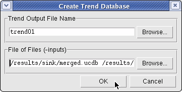

You can create
a Trend database (a specially purposed UCDB) using the command line
or the GUI. The input UCDBs need not be merged files; they can be individual
files. They can also be trend UCDBs themselves.
Prerequisites
You must have previously created
UCDBs, from test runs for which you want to capture trending information.
Procedure
- From Command Line:
To create a trend UCDB using
the command line interface, use a command such as the following:
vcover merge -trend [-output] <trend ucdb> <ucdb inputs>
See vcover merge -trend for details on command syntax.
Tip The external
coverage utility, vcover, is available in both operating system
shells and the vsim command (Tcl) shell.
- From GUI:
To create the database that
can be opened in the Trender window:
- View the UCDB(s) the Verification
Management > Browser.
- Select the UCDB(s) to be merged
into a Trend UCDB, and right click to bring up the menu.
- Choose Trend
Analysis > Create Trend Database
The Create Trend Database dialog
box opens up in a tab, as shown in Figure 1.
Figure 1. Create Trend Database
Dialog Box
- Enter the name of the Trend
UCDB file you are creating into the Trend Output File Name field.
You can Browse the hierarchy to update one which already exists.
- Enter the list of UCDBs to
use as inputs for the Trend database. You can select multiple files
easily by selecting the Browse and highlighting all files to be merged.
- Click OK to
create the merged Trend database UCDB.
Results
When the Trend database is successfully
produced, a message similar to the following appears in the Transcript
window:
...
# Merging file /results/sink/mm3.ucdb
# Merging file /results/sink/mm4.ucdb
# Merging file /results/sink/mm5.ucdb
# Writing merged result to trend
These attributes, successfully added,
are now viewable using “vcover report -trend”.